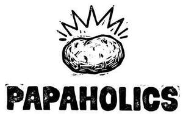

Trade Mark Journal No.2026/009 27 February 2026
UK00004338433 10 February 2026 (28,29,43)

- Class 28
- Toys, games, and playthings; amusement machines, automatic and coin-operated; toys for animals; party balloons; dolls' feeding bottles; novelty noisemaker toys for parties; puppets; dolls; carnival masks; plush toys; puzzles [toys]; paper party hats; stuffed toys; scale model kits [toys]; toy figures; toy robots; toy putty; toy dough; smart toys; decorations and ornaments for Christmas trees.
- Class 29
- Black pudding; ham; sausages; sausages in batter; hot dog sausages; fish-based foodstuffs; fruit salads; frozen french fries; potato pancakes; vegetable salads; potato-based dumplings; processed vegetables; vegetable-based prepared meals for toddlers; fruit-based snack food; snack foods based on legumes.
- Class 43
- Banqueting services; cafeteria services; self-service restaurant services; hotel catering services; temporary accommodation; fast-food restaurant services; bar services; food sculpting; sushi restaurant services; catering services for providing japanese cuisine; udon and soba restaurant services; decorating of food; providing information and advice in relation to the preparation of meals; personal chef services; food reviewing services [provision of information about food and drinks]; take-away restaurant services; teahouse services; rental of tableware; rental of furniture, linens, table settings, and equipment for the provision of food and drink; rental of cooking equipment for industrial purposes.
OVA HOME INVESTMENTS, S.L.
Representative: Nieves Castro Capitan